In order to image and detect NO as an inflammatory factor, Li et al. succeeded in sensing NO in vivo in mice using a cleavable FRET sensor. Their probe, named dihydropyridine-fluorophore-quencher (DHPFQ), is reportedly the first ‘turn on’ fluorescent probe to be used in mammals for the specific detection of NO. Here, the FRET donor, FITC, and a non-fluorescent acceptor, DABCYL, are linked with 1,4-dihydropyridine. When the sensor is intact, DABCYL quenches the FITC emission, but NO-induced cleavage of the C-C bond through homolysis between 1,4-dihydropyridine and a benzyl group at the C4-position irreversibly separates the donor and quencher. The probe exhibited high specificity for NO compared to other reactive oxygen or nitrogen species. Three days after a subcutaneous injection of Freund’s adjuvant to initiate inflammation on the left rear paws of mice, 0.5 mg kg−1 DHPFQ was injected intravenously and the mice imaged every ten minutes for one hour (Figure 6A). Using the semi-quantitative analysis of a region of interest (ROI) on the fluorescence image, their findings showed an 8-fold increase in fluorescence intensity of FITC within 10 min post-injection in the inflamed region of the left paw as compared to the non-inflamed paw, leading to nanomolar detection of NO (Figure 6B)


 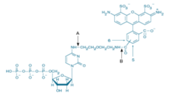
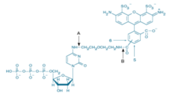


 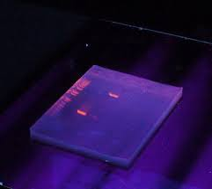
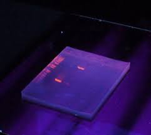


 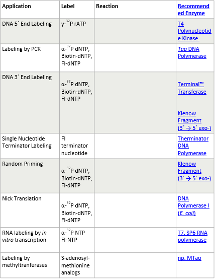
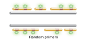
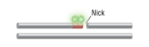
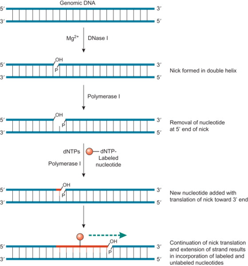
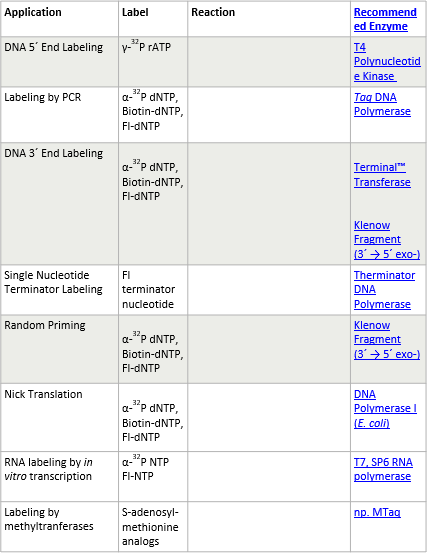
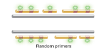
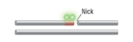
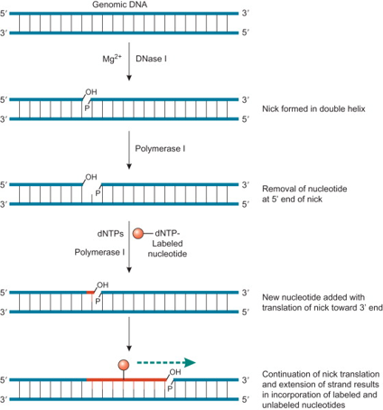